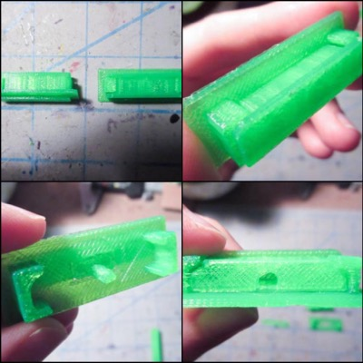

v0.3 Try
The goal was to take the learnings from update 13 and update 12 and make RDAS v0.3 in time for Wednesday but ran in to some mistakes. Here is what I tried!
Since RDAS is bigger than the small flex test cube, some of the other ends of the flexible pieces would have to be able to slide in to the sides. Wanted to create a way for the pieces to slide fit. Multiple tests of this.
Bottom right shows the extruded area of the design. It has a fillet instead of a 90 degree turn for the top part. But it is still hard to print this to exact dimensions because sometimes the extruded filament droops. I thought the fillet would prevent / reduce this, but that did not work.
This is how all the degrees of freedom are constrained. Or so I thought. Another mistake is the variance of the printed pieces each time. Sometimes it wiggles inside of its slide rails, sometimes it does not. Eventually I worked the different parameters to be as little wiggle but decent fit as possible.
Now for printing the panel pieces assembly. The flex pieces printed first, then the bottom part. This happened to be the best flex-rigid assembly I've made so far
A mistake here is that I miscalculated the extrude height of the bottom part. This lead to there only being one layer made, when there should have been two (if it was designed properly).
The reason why this is a problem is because it's possible that when tacking down the flex pieces with hot glue then it can distort that one layer. Though this did not actually end up happening.
The flex pieces were flush with the surface of the bottom part
Next was prototyping the connector on a bit bigger scale to fit the bigger connector on the panel links. It took a few tries of modifying the extrude height of the slide rails and the space between to make it right
This is the side piece with the slide rails on it and the panel assembly slided into it. It fits and this is a good way to now test the folding

Side view
Testing how it folds unveiled some mistakes. The first is that there is an end portion of the panels that protrudes past the edge of the side piece. This is not good because the robot needs to fold up to be a cube without things sticking out.
Folding the panels over the other way means the circle is not aligned properly. The circle is for the clips from the top piece to attach to, for transporting the robot and closing it up.
Because of the larger connector, the space between the folded panels and the side is the height of the connector. I think I could have made it a smaller way, and it may have prevented this issue
The other end of the panel that has a connector to go to the next side would be unable to fold upwards- or make a 90 degree angle with the other connector
Same thing from a different angle
When designing I did check the dimensions to make sure the panel was less than the side. But my mistake was the total dimension- I didn't check how it would be offset when the link is folded over to align the two circles.
A fix for the panels with the protruding edge will be to fillet the corner so it does not protrude. Another way would be to increase the link lengths, which would decrease the size of the panels. This way would also fix the other end not being able to sit at 90 degrees to the connector problem too.
A fix for the connector would probably be to try it over again. Make it smaller. But maybe there is a better way to do this with snap fit rather than slide fit.
Can't wait to improve on this and make the v0.3 been thinking about.